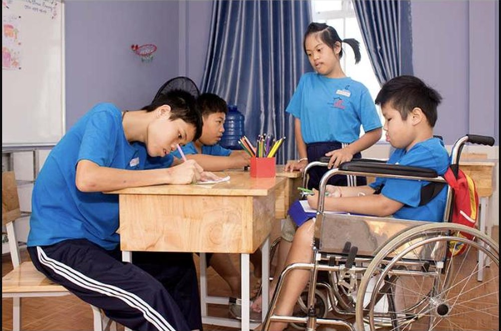
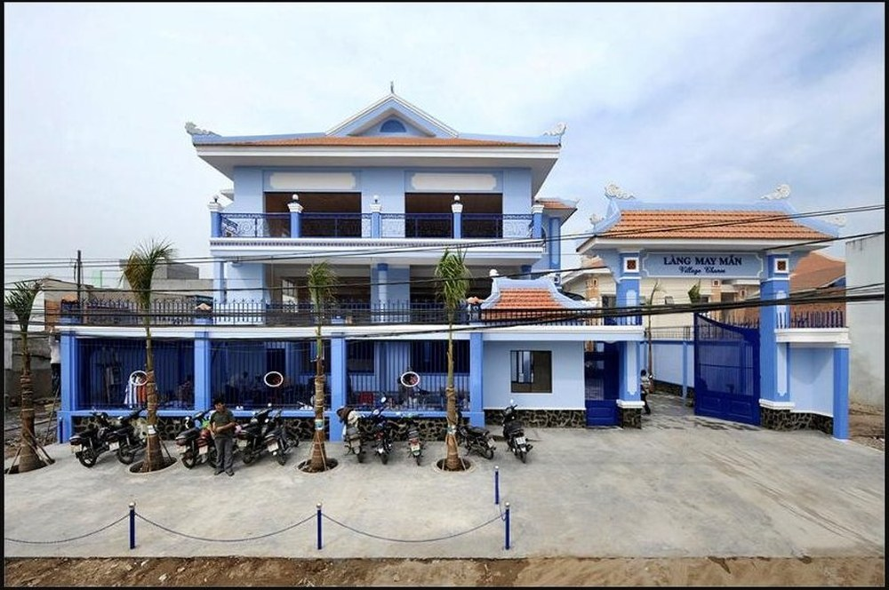

A classroom for every child: how Maison Chance opens school doors to children with disabilities
October 2026

For many children with disabilities, the hardest barrier is not the lesson but the door. At Maison Chance in Vietnam, school is free, the classroom is built for them, and a child who was once turned away finds a desk waiting.
Schools for children the system struggles to reach
Maison Chance runs two primary schools, in Ho Chi Minh City and in Lam Dong province, following the national curriculum. They welcome children from poor families, children without birth certificates and those who are past the usual school age. The organization covers tuition, uniforms, books and supplies, and provides a daily meal, basic medical care and regular health checks.
Specialized classes, then inclusion
Children with intellectual or physical disabilities join specialized classes that focus on daily living skills, movement, concentration and social interaction. Those who progress well are considered for the inclusive primary classes, so they can continue on the regular school path. A low-cost nursery also helps the children of residents with disabilities, easing the burden on families.
More than lessons
Pupils also learn computing, languages, music, sport and swimming. Those with a passion take part in circus classes three times a week, which builds strength, focus and confidence. For students who excel, scholarships support secondary school and university, so a family's finances never close the door.
“When a child who was told “not here” finds a desk waiting for them, hope stops being an idea and becomes a place to sit.”
Source information: Maison Chance (maison-chance.org)
primary schools: Ho Chi Minh City and Lam Dong
tuition, uniforms, books and a daily meal
circus classes per week for those with talent
